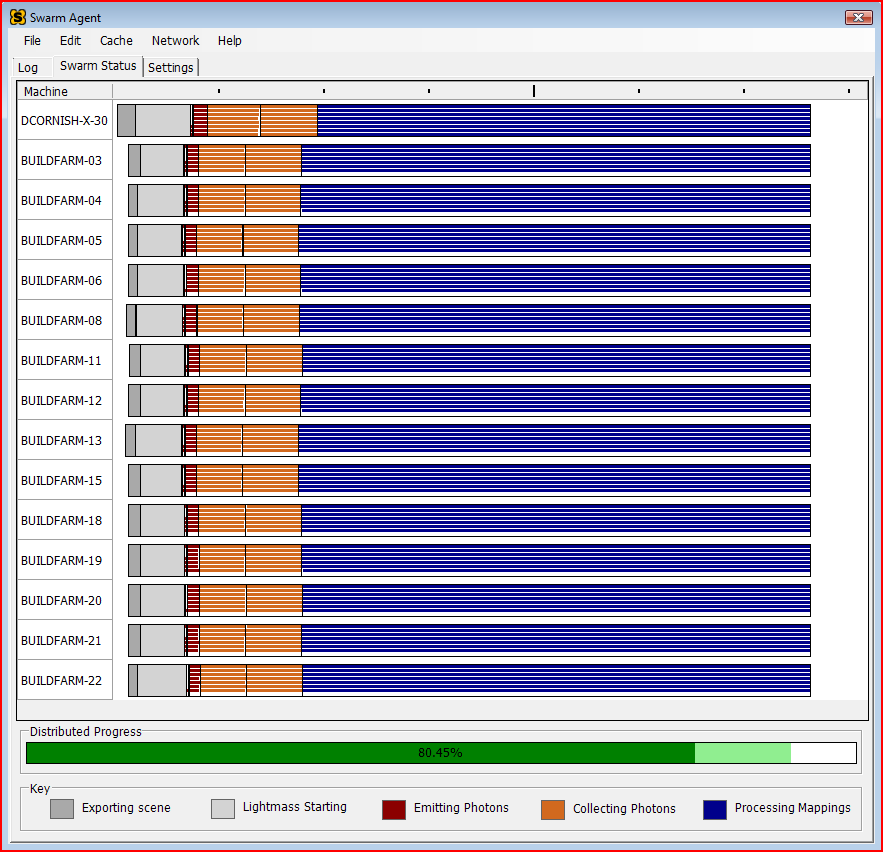
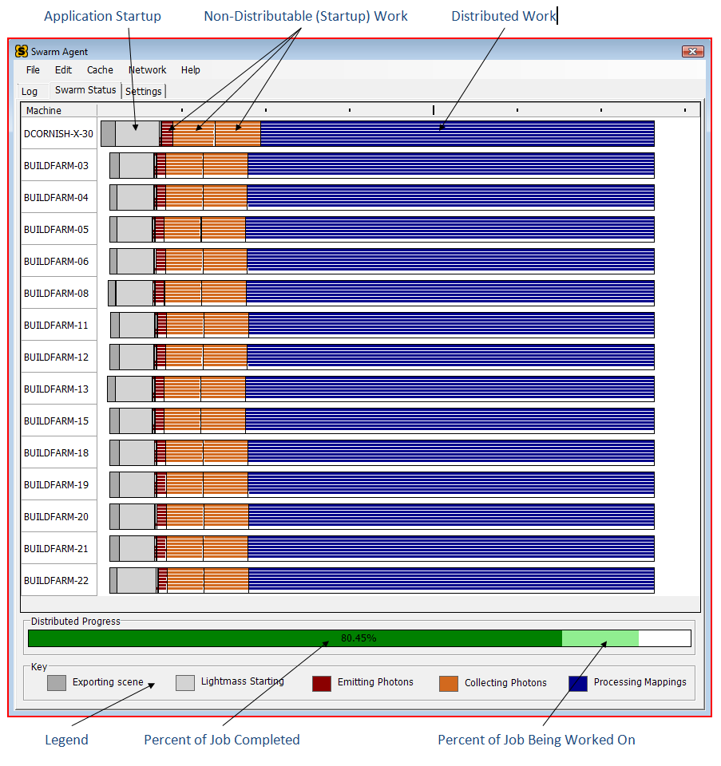

UDN
Search public documentation:
Swarm
日本語訳
中国翻译
한국어
Interested in the Unreal Engine?
Visit the Unreal Technology site.
Looking for jobs and company info?
Check out the Epic games site.
Questions about support via UDN?
Contact the UDN Staff
中国翻译
한국어
Interested in the Unreal Engine?
Visit the Unreal Technology site.
Looking for jobs and company info?
Check out the Epic games site.
Questions about support via UDN?
Contact the UDN Staff
Unreal Swarm - Massive Application Distribution for Unreal Engine 3
Document Summary: A high-level and technical overview of Unreal Swarm, a general application and task distribution system. Document Changelog: Created by Derek Cornish with contributions by Daniel Wright; updated by Richard Nalezynski?.Intended Audience
This document is intended for those interested in a high-level view of the system and general users, including level designers and artists.What is Unreal Swarm?
Demanding applications are often designed to take advantage of every ounce of processing power your system can muster, with performance ideally multiplying perfectly with each additional processor core. This is what makes moving from dual-core to quad-core, or from quad-core to 8-core, so incredibly useful for these applications. Unreal Lightmass, the high-quality static global illumination solver in Unreal Engine 3, is one of those applications because of its extreme computational needs. Even on an 8-core system, rebuilding lighting for a large or complex level can take enough time that iteration performance can suffer. Enter Unreal Swarm. Using Swarm
For the most part, Swarm will automatically start up, perform its tasks, and shut down without any intervention from the user. The Editor can start it up on demand when you do a Lightmass lighting build, and the Swarm Agent will keep track of the Editor that launched it and shut itself down once the Editor closes. The defaults in the application are set by your Swarm administrator and if you have questions that go beyond the FAQ and other documentation on this page, ask them for further assistance. So, although Swarm is designed to be quiet and hands-off, there will always be exceptions. And thus, the FAQ.Swarm FAQ
Why am I not getting distribution?
Remote Swarm Agents may decline to work on your job for a few different reasons, the most common among them is that they're already busy working on someone else's. Another possibility is that they have determined that they are too busy to take on a job at that time, often caused by the machine doing something else resource intensive such as compiling or cooking. In theSwarm Status tab of the Agent window, you should see a full list of all remote agents that could potentially help with your build. If one of them isn't currently available, you'll see a white bar ticking along with the rest of the build, and if you mouse-over the bar you'll see "Waiting for remote to become available".
Also, a more advanced way to peek at the available remote agents, even when not doing a build is to click on the Log tab and select Ping Remote Agents from the Network menu. You'll see a list of the remote machines and their current state.
How does the Swarm Agent start and stop?
If the Agent isn't already running, it will start up automatically when you do a Lightmass lighting build from within the Editor. If the Editor starts up the Agent this way, the Agent will keep tabs on it and shut itself down when the Editor closes. Otherwise, the Agent remains running to be ready to manage jobs at any time. Keep in mind that while the Agent is running, if you click the 'X' on the Agent window, it will only hide the window (we want to keep it running). An Agent tray icon will still be available however, and you can double-click it to bring the window back up. If you want to manually shut the Agent down, either select "File" -> "Exit" from the Agent menu, or right-click the tray icon and select "Exit". Don't forget that if the Agent started automatically from the Editor, it'll shut itself down automatically as well when you exit the Editor. Don't worry, if you shut down the Agent manually, then do another Lightmass lighting build, it will start right back up.What do the bars mean in the Visualizer?
For each machine working on your lighting build, including your own, a set of bars is displayed indicating status and progress. Each machine may have multiple threads executing simultaneously which is indicated by the multiple horizontal lines per machine. A legend is provided at the bottom of the window to describe what the colors mean and you can also mouse-over the bars for more details. Setup and Configuration
Swarm Agent Settings
- CacheFolder
- The location of the Agent's local cache folder. This should be located on a fast disk with sufficient free space.
- MaximumCacheSize
- The maximum size, in gigabytes, that the cache maintenance routine will attempt to keep the disk usage of the cache.
- MaximumJobsToKeep
- The maximum number of Jobs, including all logs, binaries, and output files, to keep at any time.
- ShowDeveloperMenu
- Enables the
DeveloperSettingstab in the Agent. Recommended ONLY for developers and QA. - AvoidLocalExecution
- Setting this to True will cause the Agent to attempt to schedule tasks only onto remote machines, avoiding local execution if possible. If no remote machines are available, it will schedule the tasks locally until remote help becomes available.
- EnableStandaloneMode
- Prevents distribution of jobs to remote machines, forcing local-only execution.
- BringToFront
- If True, when a job starts the Agent window will be brought to the front and the
Visualizertab selected. - TextFont
- The font used within the Agent window's tabs such as
Log,Visualizer, andSettings. - Verbosity
- The level of detail logged out to the
Logtab.
Swarm Agent Logging
By default, everything the Agent does is logged out to a file on disk located in the Logs folder within the CacheFolder. A new log is started at the end and beginning of every job, so that some logical splitting of logs is performed. The default logging level to the Agent'sLog tab is Informative. The default logging level to the file on disk is ExtraVerbose.